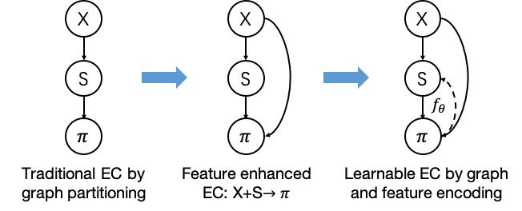
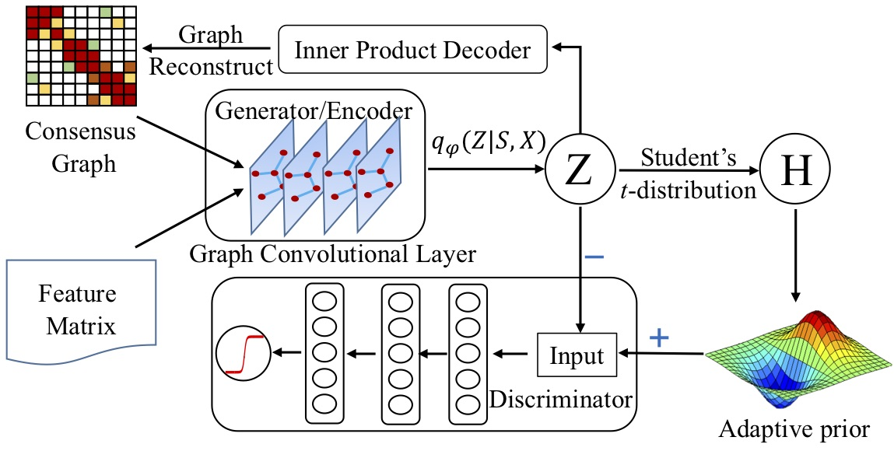
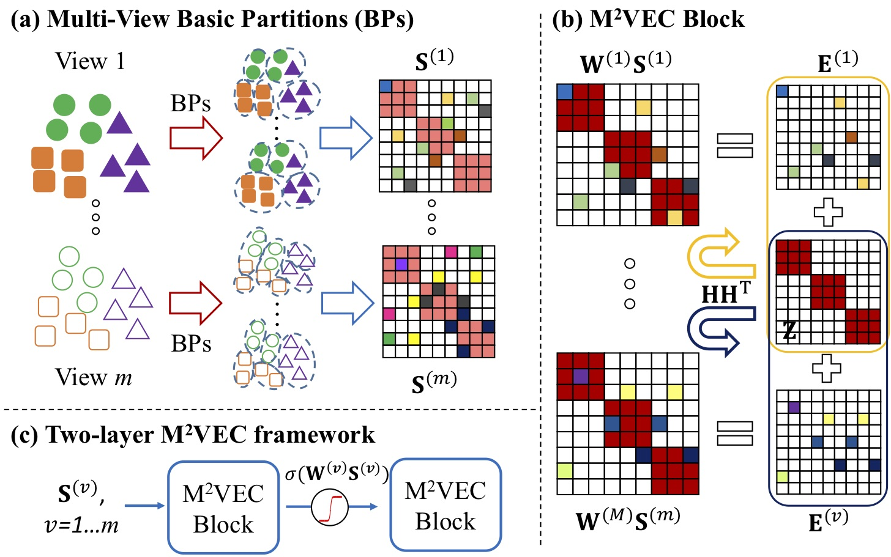
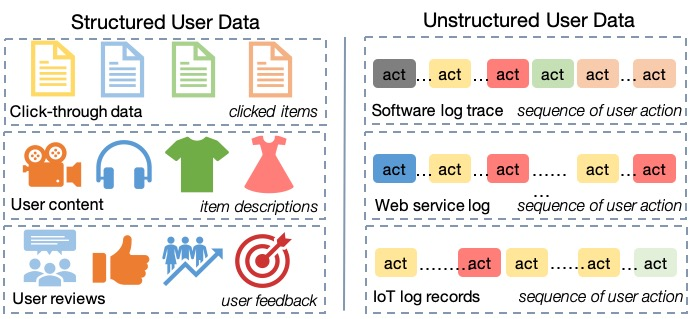
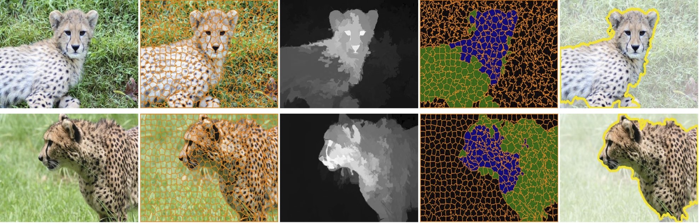
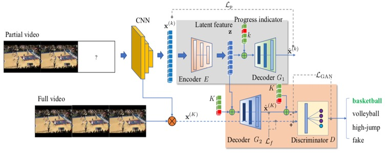

| Home | Research | Publications | Teaching | CV | Services |
Research
My research focuses on feature representation learning with reconstruction and its applications in data cluster analysis, user modeling, and visual understanding task. Specifically, I design and develop encoder algorithms upon K-means coding, subspace learning, deep neural networks, sequential learning, and memory networks, and tailor the decoder to handle various of data types including categorical partitions, high-dimensional features, time-series data, graph-structured data, unstructured user logs, multi-view data, and vision data.
Some of my research projects are
- learnable ensemble clustering
- deep multi-view clustering
- interpretable user modeling
- saliency-guided image cosegmentation
- generative video action analysis
Learnable Ensemble Clustering

Ensemble clustering (EC) takes as input a set of basic partitions (i.e., clustering results obtained by different methods or settings) and integrates these basic partitions into a consensus one, which is a robust alternative to the traditional clustering algorithm. Existing EC methods mainly summarize partitions as a consensus graph (a.k.a. co-association matrix), and directly conduct graph partitioning to achieve consensus clustering, which, however, neglect to reuse the rich information from raw features as well as to further explore the partition-level representations. Due to these two limitations, EC methods may degrade on several cases.

In this research project, we aim to continuously improve the ensemble clustering by feature enhanced method (simultaneous clustering and ensemble), low-rank representations (robust spectral ensemble clustering), and jointly encoding feature content and consensus graph (adversarial graph embedding). One of our recent research projects is to transform ensemble clustering as a graph embedding process, where we leverage graph convolutional network to model the distribution over the embedding space and adopt the adversarial training as an effective regularizer. The entire learning process is guided by the graph reconstruction loss with a clustering-induced prior.
- Zhiqiang Tao, Hongfu Liu, Sheng Li, and Yun Fu, “Robust Spectral Ensemble Clustering”, CIKM, 2016.
- Zhiqiang Tao, Hongfu Liu, and Yun Fu, “Simultaneous Clustering and Ensemble”, AAAI, 2017.
- Zhiqiang Tao, Hongfu Liu, Jun Li, Zhaowen Wang, and Yun Fu, “Adversarial Graph Embedding for Ensemble Clustering”, IJCAI, 2019.
- Zhiqiang Tao, Hongfu Liu, Sheng Li, Zhengming Ding, and Yun Fu, “Robust Spectral Ensemble Clustering via Rank Minimization”, ACM Transactions on Knowledge Discovery from Data (TKDD), vol. 13, no. 1, pp. 4:1-4:25, 2019.
Deep Multi-View Clustering
Multi-view data usually refer to a more general concept beyond the multiple geometric views, which could be the data collected from various of sources, modalities captured by multiple sensors, and the feature representations with different methods.

Multi-view clustering (MVC) aims to group the similar data by jointly considering all the views, where the key factor is to leverage the complementary information from different views. However, due to the distinct gap between different feature domains, it is not an easy task to directly learn a common space across multiple views. In light of this, we explore the complementary information in higher-level over the original feature space, i.e., upon the partition space by ensemble clustering or the hidden space by deep neural networks. In this project, we design and build deep MVC model by using stacked marginalized denoising auto-encoders with multi-view partitions, employing convolutional neural networks on multi-view images, and utilizing generative adversarial networks (GAN) for incomplete multi-view data.
- Zhiqiang Tao, Hongfu Liu, Sheng Li, Zhengming Ding, and Yun Fu, “From Ensemble Clustering to Multi-View Clustering”, IJCAI, 2017.
- Zhiqiang Tao, Hongfu Liu, Sheng Li, Zhengming Ding, and Yun Fu, “Marginalized Multi-View Ensemble Clustering”, IEEE Transactions on Neural Networks and Learning Systems (TNNLS), 2019.
- Chaoyang Li, Qianqian Wang, Zhiqiang Tao, Quanxue Gao, and Zhaohua Yang, “Deep Adversarial Network for Multi-view Clustering”, IJCAI, 2019.
- Qianqian Wang, Zhengming Ding, Zhiqiang Tao, Quanxue Gao, and Yun Fu, “Partial Multi-View Clustering via Consistent GAN”, ICDM, 2018.
Interpretable User Modeling

User modeling targets to learn generic user representations to facilitate the downstream tasks, such as personalization, profiling, cross-platform recommendation, and understanding user behavior. Existing methods mainly focus on the structured user data (e.g., click-through data, user content, review, etc), which is usually presented with a clear schema and easy to be interpreted. However, the unstructured user data, which usually encrypts user's long-term usage habit and is intuitively more close to user intention, has not been well explored yet. For example, the user log-trace history records the user daily activities and provides rich sequential data.

Our research study is one of the pioneering attempts to develop an interpretable user model upon the user log history along with auxiliary software tutorials. We build on the top of a sequence-to-sequence model, and designs two encoding pathways to jointly capture the temporal context from user log sequences and the semantic information from tutorial text annotations. We propose a recurrent memory network to link these two sources, which recurrently queries the tutorial memories with the temporal context, and thus interprets the user log with attention mechanism. A recurrent neural network based decoder is used to predict the user next action. Our study shows the great potential of using log-trace data for the user personalization tasks, such as detecting user interest across platforms.
- Zhiqiang Tao, Sheng Li, Zhaowen Wang, Chen Fang, Longqi Yang, Handong Zhao, and Yun Fu, “Log2Intent: Towards Interpretable User Modeling via Recurrent Semantics Memory Unit”, SIGKDD, 2019.
Visual Understanding
Translating low-level vision data (e.g., image and video) into high-level semantic concepts lies at the core part in visual understanding tasks, such as image classification/segmentation, object detection/tracking, video recognition, image/video captioning, etc. In our project, we focus on image cosegmentation and video action prediction/recognition.
Image Cosegmentation

Image cosegmentation is an important extension to single image segmentation, which tries to simultaneously segment out the common objects from multiple images. Previous methods mainly solve it via a graph model by transforming cosegmentation as common nodes selection. This kind of methods, however, might be sensitive to graph definition and inflexible to incorporate other vision cues. Our research project formulates image cosegmentation as a constrained clustering process, where the unsupervised saliency prior is used to alleviate background noises and provide partition-level guidance. A multi-view K-means-like optimization solution is provided to obtain cosegmentation results in a nearly linear time complexity.
- Zhiqiang Tao, Hongfu Liu, Huazhu Fu, and Yun Fu, “Image Cosegmentation via Saliency-Guided Constraint Clustering with Cosine Similarity”, AAAI, 2017.
- Zhiqiang Tao, Hongfu Liu, Huazhu Fu, Yun Fu, "Multi-View Saliency-Guided Clustering for Image Cosegmentation", IEEE Transactions on Image Processing (TIP), 2019.
Video Action Analysis

Video action prediction and multi-view video action recognition are two challenging tasks for video understating, where the challenges raise at the the incomplete information of partially-observed videos for action prediction and the gap between heterogeneous feature domains for multi-view action recognition. In our research study, we resort to generative model to address these challenges, such as using auto-encoder to map partial video features to the full videos, adopting variational GANs to generate complete video features conditioning on the partial ones, and designing multi-view GANs to bridge the gap between different video modalities.
- Yu Kong, Zhiqiang Tao, and Yun Fu, “Deep Sequential Context Networks for Action Prediction”, CVPR, 2017.
- Yu Kong, Zhiqiang Tao, and Yun Fu, “Adversarial Action Prediction Networks”, IEEE Transactions on Pattern Analysis and Machine Intelligence (TPAMI), 2019.
- Lichen Wang, Zhengming Ding, Zhiqiang Tao, Yunyu Liu, and Yun Fu, “Generative Multi-View Human Action Recognition”, ICCV, 2019.